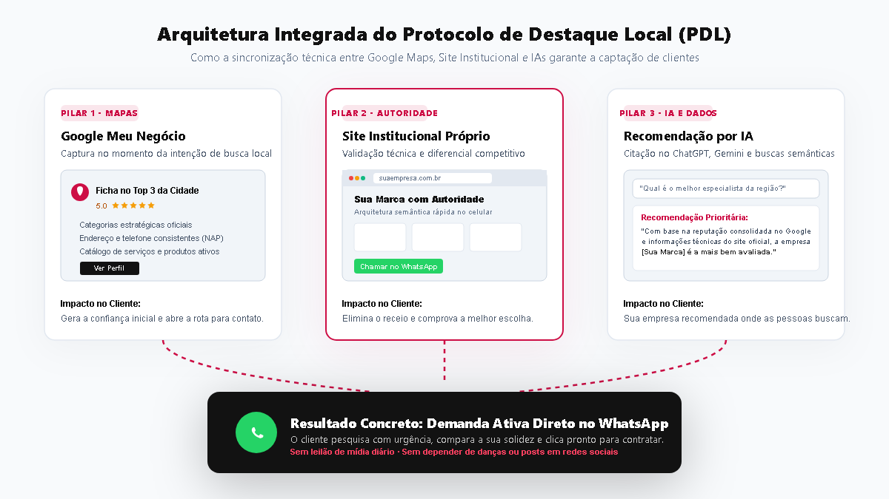
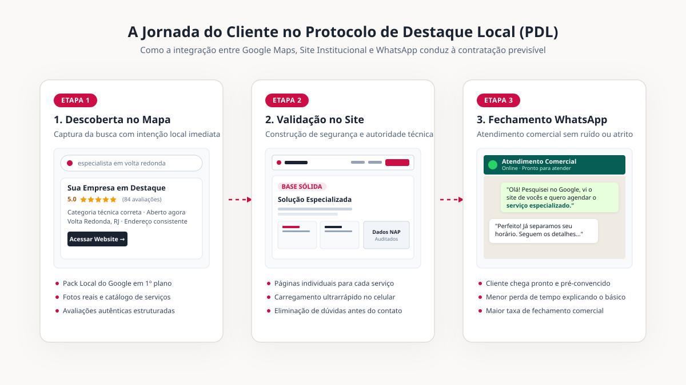

Protocolo de Destaque Local: por que a soma coordenada das ferramentas supera ações isoladas
Contratar um site com um desenvolvedor, criar uma ficha no Google por conta própria e esperar que clientes qualificados encontrem sua empresa é uma estratégia fragmentada. O Protocolo de Destaque Local (PDL) foi concebido pela C.E. Afonso para atuar como uma estrutura integrada, na qual cada ativo digital valida e reforça os demais perante os critérios do algoritmo de busca e a avaliação do consumidor.

O problema de depender de ações digitais desconectadas
Muitas empresas investem em iniciativas isoladas: contratam anúncios ocasionais, postam fotos em redes sociais ou cadastram uma ficha genérica no Google Maps. Quando essas iniciativas não geram novos clientes de forma regular, a conclusão apressada costuma ser a de que "a internet não funciona para o meu nicho".
Na prática, o que ocorre é a ausência de um fluxo estruturado. O cliente que pesquisa no Google por uma solução na sua cidade toma decisões em múltiplos passos. Ele observa o mapa para verificar a proximidade e a reputação; em seguida, acessa o site institucional para checar se a empresa transmite solidez e possui a especialidade desejada; e, por fim, compara essas informações antes de clicar no botão de contato. Se houver divergência entre o que consta na ficha e o que está no site, ou se o site for lento e incompleto, o contato é interrompido antes de começar.
Estudos recentes de comportamento do consumidor no Google demonstram que empresas que mantêm coerência completa de dados (Nome, Endereço, Telefone e catálogo de serviços) entre o Perfil da Empresa e o site próprio possuem até 2,8 vezes mais probabilidade de serem percebidas como estabelecimentos de alta confiança do que perfis sem respaldo institucional.
Fontes: Google Local Search Studies e BrightLocal Consumer SurveyOs 4 pilares da metodologia PDL
O Protocolo de Destaque Local estrutura a presença digital da empresa em quatro camadas complementares, garantindo que o seu negócio esteja presente exatamente onde o seu potencial cliente pesquisa:
Como cada camada do protocolo atua:
Captura a demanda imediata no Bloco Local (Pack Local) e Google Maps. Categorização técnica, fotos profissionais, catálogo de serviços e incentivo sistemático a avaliações autênticas.
Base permanente de autoridade técnica. Páginas dedicadas para cada serviço, carregamento veloz, conteúdo explicativo aprofundado e arquitetura mobile pensada para conversão.
Padronização rigorosa de Nome, Endereço e Telefone em diretórios e plataformas de referência, enviando sinais consistentes de relevância geográfica que o algoritmo premia.
Rastreamento estruturado dos pontos de contato, formulários pré-qualificados e direcionamento direto para conversa comercial sem intermediários ou formulários burocráticos.
Por que clientes de maior valor valorizam essa estrutura
Existe uma distinção clara entre o público puramente caçador de preço e o cliente que procura segurança técnica e qualidade no atendimento. O cliente disposto a contratar serviços de ticket mais alto pesquisa a empresa com rigor. Ele lê a biografia profissional, confere se o endereço é formal, avalia o tempo de mercado e observa o padrão do site.
Quando encontra uma presença profissional organizada de ponta a ponta, a conversa inicial pelo WhatsApp muda de patamar: o cliente já compreendeu a relevância do seu trabalho, economiza seu tempo de explicação e chega preparado para fechar a contratação.

O que costuma travar essa decisão
O Google Meu Negócio e o Site Institucional são produtos individuais plenamente funcionais. A diferença reside na integração estratégica: o PDL unifica ambos sob uma estratégia única de SEO local e padronização de sinais cadastrais, evitando que o cliente precise contratar múltiplos fornecedores ou lidar com informações desconexas.
O PDL é uma estruturação completa de fundação da presença digital (implantação entregue pronta e homologada). Uma vez implementado, o ativo pertence integralmente à sua empresa. A continuidade de postagens ou gestão contínua pode ser mantida internamente ou contratada à parte como serviço recorrente de gestão.
Não necessariamente. Prestadores de serviços e consultores que atendem em domicílio ou regionalmente podem configurar áreas de cobertura específicas no Google sem expor publicamente o endereço residencial, mantendo plena conformidade com as diretrizes do Google.
Correções técnicas cadastrais e ativação do site geram impacto imediato na validação da marca. Já a conquista de posições competitivas nas pesquisas do Google se consolida progressivamente nas semanas seguintes, conforme o algoritmo reconhece a autoridade acumulada.
Para quem o Protocolo de Destaque Local faz sentido
Sua empresa é um negócio local ou você é um profissional liberal (consultório, clínica, escritório, prestador técnico) que deseja construir um canal próprio e previsível de clientes no Google, sem ficar refém exclusivo de custos crescentes em anúncios pagos e sem depender apenas de indicações esporádicas.
Seu negócio ainda não tem os serviços centrais formalizados, não possui capacidade operacional para atender novas demandas ou busca promessas irreais de "resultados imediatos no primeiro dia", que desconsideram o tempo necessário de maturação de qualquer trabalho sério de posicionamento.
Perguntas frequentes sobre o PDL
A C.E. Afonso está sediada em Volta Redonda (RJ), com profundo domínio da dinâmica de buscas do Sul Fluminense, mas atende empresas e especialistas de todo o Brasil aplicando as mesmas diretrizes técnicas de relevância geográfica.
Todo o planejamento e execução estratégica são conduzidos diretamente por Carlos Eduardo Afonso, com comunicação transparente e suporte contínuo durante todas as etapas de implantação.
Realizamos um diagnóstico prévio da sua URL atual. Dados históricos e domínio são preservados, mas a arquitetura de código, velocidade e conteúdo são modernizados para garantir compatibilidade com as exigências contemporâneas do Google.
Iniciamos com uma conversa consultiva pelo WhatsApp para analisar a situação atual da sua empresa no Google, identificar os pontos cegos e verificar se o PDL é o melhor caminho para o seu momento comercial.